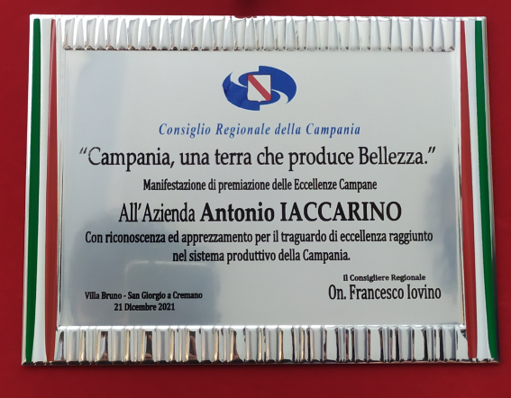
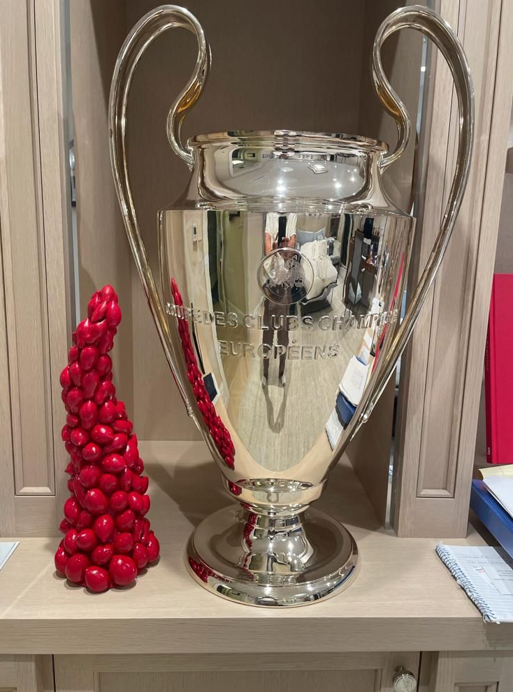
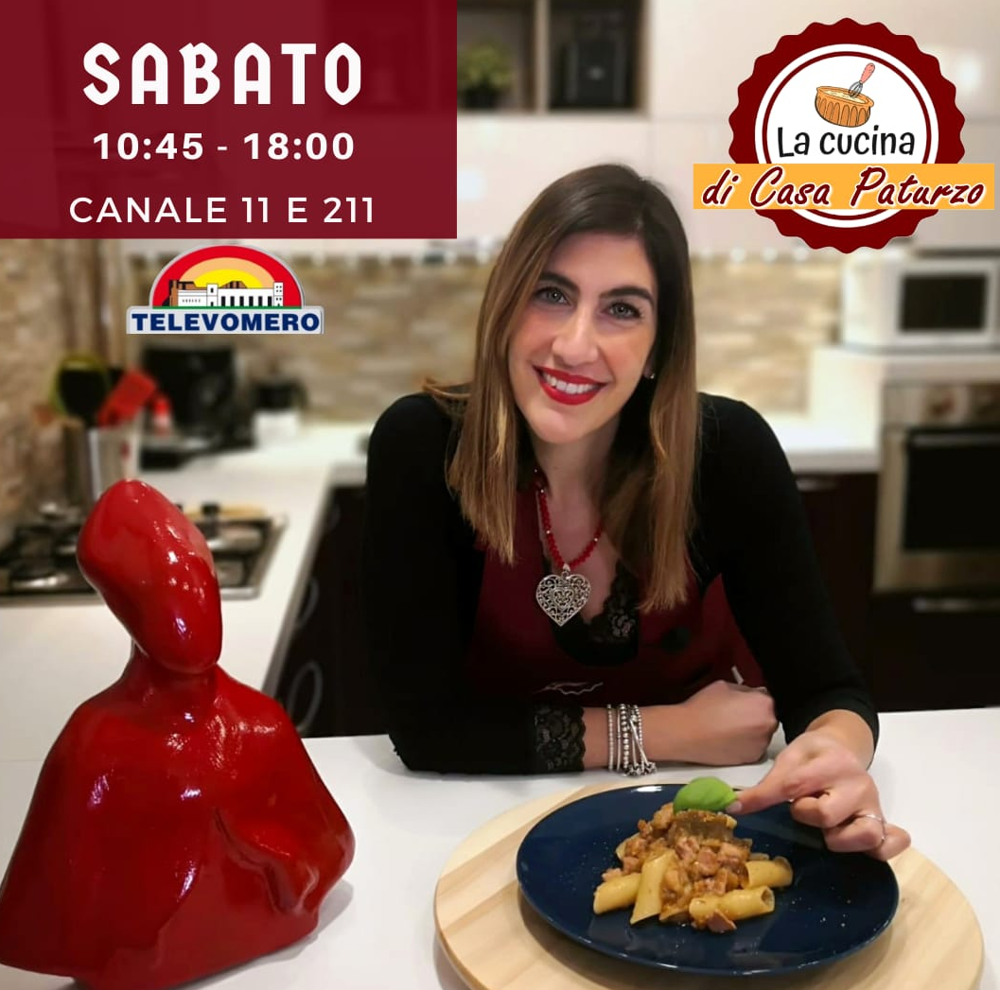
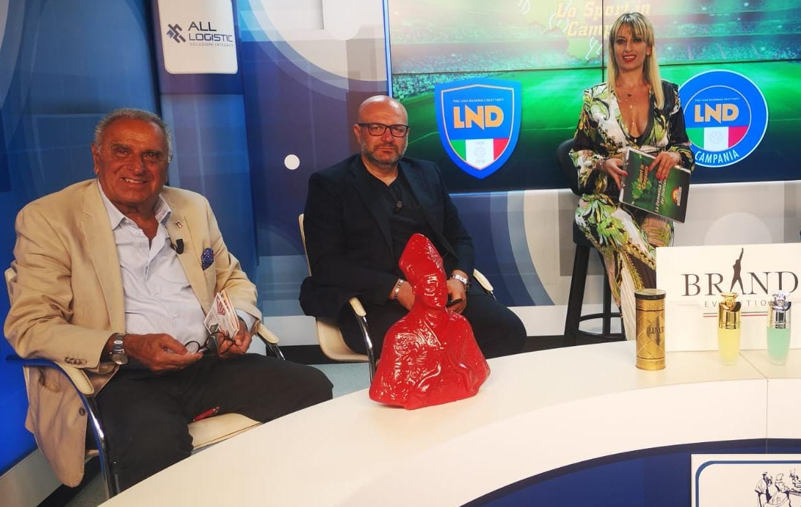

My approach (Soft Skills)
For me, data science is not just about writing code or training models — it’s about the way you approach problems. What makes me different is not a single skill, but a combination of habits and attitudes that shape the way I work.
- Curiosity. I don’t stop at results, I always want to know why something behaves the way it does. That’s what keeps me digging into data until the story becomes clear.
- Clarity. Numbers only matter if people can understand them, so I put effort into making my work transparent — whether it’s through well-documented code, clear communication, or turning messy complexity into something others can actually use.
- Creativity. Even though I was trained in statistics, I enjoy approaching problems from unexpected angles. Data science, for me, is also a creative act: finding new ways to ask questions and design solutions. In many ways, I bring the same mindset I have as an artist into my work with data.
- Growth. This field never stands still, and neither do I. I’m motivated by the chance to explore new ideas, test emerging tools, and push myself beyond what I already know. Learning isn’t a side activity, it’s at the heart of how I keep evolving.
- Adaptability. My background gave me the chance to move across research and applied projects, so I’m comfortable switching between rigor and creativity depending on the context.
Looking ahead, I want to grow in an industry environment where these traits can translate into real impact. For me, the next step is about sharpening my skills in practice, learning from experienced teams, and contributing to work that matters beyond the notebook.
My passion
Long before I ever wrote my first line of code, I grew up surrounded by ceramics — a family tradition where patience, detail, and creativity were part of everyday life. For me, clay was never just a material: it was something alive, something that teaches you to slow down, to experiment, and to accept that not everything comes out perfect on the first try.
Over time I started creating my own pieces, and that experience shaped me just as much as any formal education. Ceramics taught me that beauty and meaning come from process as much as from outcome, and that even small imperfections can add character and authenticity.
That artistic background is still a big part of who I am. It keeps me connected to tradition, but also gives me perspective: the ability to see beyond function, to value form and story, and to treat what I build — in any context — as something that should carry both purpose and personality.
And if you ever hire me as a data scientist, there’s a good chance you’ll also get a piece of my artwork on your desk — a small reminder that numbers and creativity aren’t so far apart after all.
Recognition

Regional Council of Campania — Award for Excellence in Production, 2021.
Selected Exhibitions
Ceramic “Vesuvian cherry tomato horn” on Abramovich’s yacht
A unique piece displayed on the yacht of Roman Abramovich, former Chelsea president.

Exhibitions across the Sorrento Peninsula
Celebrating the traditions of my homeland through ceramic works showcased on the Amalfi and Sorrento coast.
Media
Regional cooking shows
My San Gennaro ceramic sculpture featured on local TV programs dedicated to Campania’s cuisine.

Football talk shows
Bringing the color and symbolism of Naples’ tradition into national football discussions.
